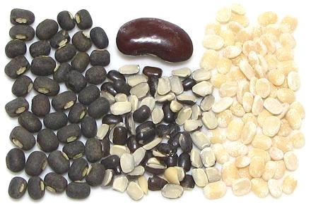

Urad Beans

[Black Gram, Black Lentils, White Lentils (India); Vigna mungo]
These small black beans native to India are the same size and shape as the
familiar Mung Bean, and are one of the more important
beans/dals in India.
Urad beans are sold in several forms, whole (Urad, Black Gram),
Split, split and peeled (Urad Dal, White Lentils) and also whole
peeled (less common).
Crushed urad beans are also used as an ingredient in spice mixes,
generally fried or roasted with other spices before being added to the
main recipe, either as an ingredient or as a garnish (tempering,
tadka).
More on Varieties of Bean.
Buying:
Whole urad beans, split urad beans and dal
(split and peeled) are easily available in markets serving Indian
communities.
Storing:
Keep beans or dal cool and dry in a sealed
container and mark the container by date purchased. Technically they'll
last for years without spoiling - BUT in practice a year is maximum. With
age they cook less and less well until they simply will not soften, no
matter how long you soak them and how long you cook them.
Soaking:
Whole urad beans need to be soaked in lightly
salted water at least 4 hours and preferably 5. You'll need 2-1/4 cups
of soaking water for every cup of beans. The dal should be soaked for at
least a half hour, but if it's old even a couple hours won't help much.
Cooking:
Whole soaked beans will cook in about
45 minutes. Unsoaked they'll need at least an hour, proably more, and
they tend to fall apart a lot more than soaked beans. Soaked dal should
be cooked for around 1/2 hour depending on how soft you want it. In
India it's normally cooked until like a thick soup, but if the dal is
old it will never soften.
bp_uradz 110122 - www.clovegarden.com
©Andrew Grygus - agryg@clovegaden.com - Photos on this
page not otherwise credited are © cg1 -
Linking to and non-commercial use of this page permitted.